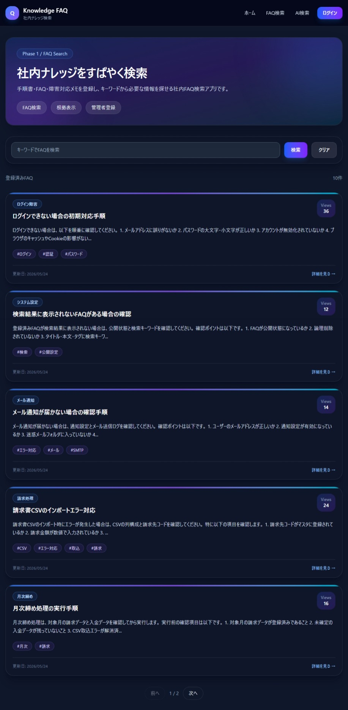
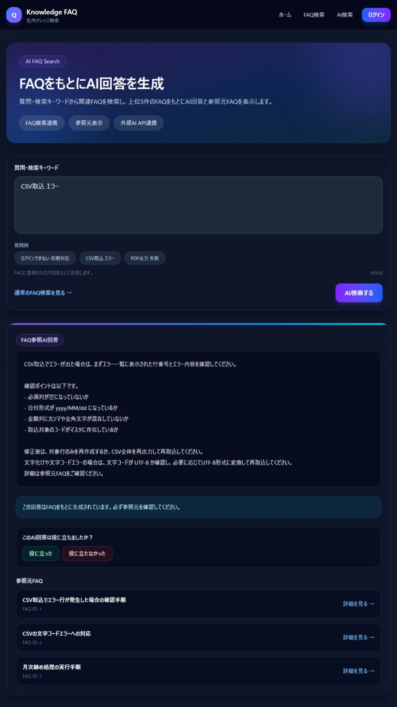
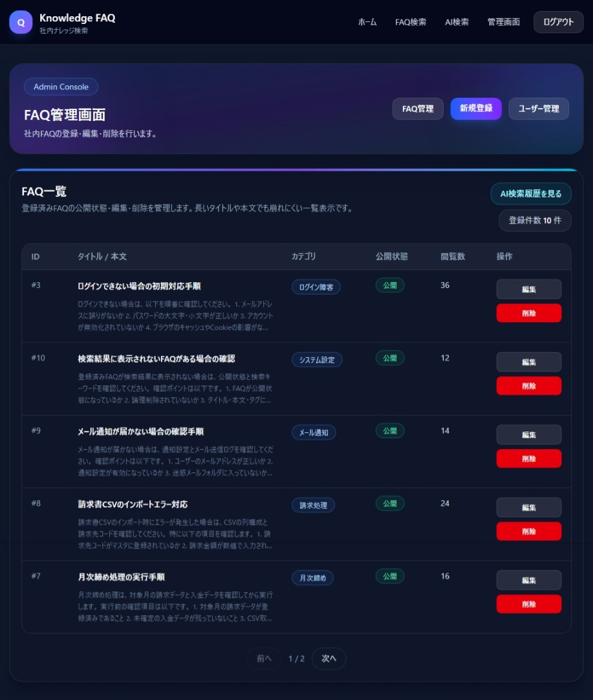
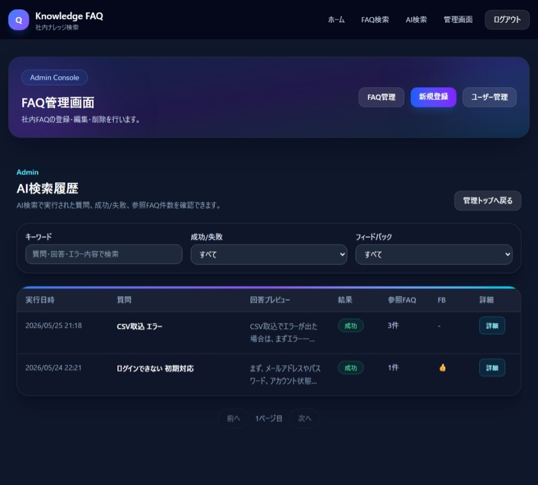

バックエンド
- C# / ASP.NET Core（.NET 8 / Web API）
- Entity Framework Core
- ASP.NET Core Identity
- JWT認証 / 管理者向け認可
- OpenAI API連携
- xUnit（Controller / Service テスト）
ASP.NET Core API と Next.js による、社内FAQ・業務ナレッジ検索を想定したWebアプリです。
FAQ、手順書、障害対応メモを一元管理し、通常検索とAI検索の両方から必要な情報を確認できる構成にしています。
AI検索では、質問内容をもとに関連FAQを検索し、上位FAQをコンテキストとして外部AI APIへ渡して回答を生成します。
回答には参照元FAQを表示し、FAQにない内容を断言しないようガードレールを設けています。
※フロントエンドは Vercel および Azure Static Web Apps、バックエンド API は Heroku 上で動作する構成です。
※デモ環境の状態により、初回アクセス時に起動待ちやAPI応答待ちが発生する場合があります。
※掲載しているFAQ、ユーザー、検索履歴データは、すべて架空の検証用データです。
※AI API連携では、APIキーをソースコードに直接保持せず、User Secrets またはホスティング環境の環境変数で管理する想定です。

代表的な画面をいくつか抜粋しています。
一般利用者向けのFAQ検索と、管理者向けのFAQ管理・AI検索履歴管理を想定して実装しています。

キーワードに応じて公開済みFAQを検索し、タイトル、本文抜粋、カテゴリ、タグを確認できます。 検索結果では一致箇所のハイライトやスコア順表示を想定し、目的のFAQへたどり着きやすくしています。

入力された質問をもとに関連FAQを検索し、上位FAQをコンテキストとしてAI回答を生成します。 回答には参照元FAQを表示し、根拠を確認しながら利用できる構成にしています。

管理者がFAQの登録、編集、削除、公開・非公開の切り替えを行う画面です。 社内ナレッジを継続的に更新する運用を想定しています。

AI検索で入力された質問、生成回答、参照元FAQ、成否、フィードバックを確認できる画面です。 AI回答の品質確認やFAQ改善につなげるための管理機能として実装しています。
※本ページの「主な機能」は、社内FAQ・業務ナレッジ検索AIアプリとして実装した内容です。
※FAQに基づく回答生成と、参照元を表示する構成により、業務利用時の確認性を重視しています。
フロントエンドとバックエンドを分離し、 Next.js から ASP.NET Core Web API を呼び出す構成にしています。 管理者向け機能にはJWT認証を導入し、FAQ登録・編集・削除、AI検索履歴確認、ユーザー管理を保護しています。
User Browser
→ Next.js Frontend
→ ASP.NET Core Web API
→ EF Core
→ MySQL
AI Search
→ FAQ Search
→ Top FAQ Context
→ OpenAI API
→ Answer + SourcesREADME、ER図、画面遷移図、要件定義、基本設計、詳細設計などを GitHub上のドキュメントとして整備しています。
テスト・CI/CD・デプロイ構成は、READMEおよび docs 配下の設計資料に整理しています。
AI検索では、ユーザーの質問文をそのままAIへ渡すのではなく、 バックエンド側で関連FAQを検索し、上位FAQをコンテキストとして整形したうえで外部AI APIへ送信します。 これにより、社内FAQに基づいた回答を生成し、回答と一緒に参照元FAQを表示できる構成にしています。
ガードレールとして、FAQに記載されていない内容は断言しない、 FAQにない手順・原因・担当部署・問い合わせ先を推測しない、 機密情報や認証情報を出力しない、という制御をプロンプトに含めています。
デモサイト、バックエンドAPI、Swagger UI、ソースコードは下記からご覧いただけます。
Vercel デモサイト：
https://faq-knowledge-search.vercel.app
Azure デモサイト：
https://green-bush-0db40ef00.7.azurestaticapps.net/
バックエンドAPI：
https://faq-app-api-d060ab93d646.herokuapp.com/
Swagger UI：
https://faq-app-api-d060ab93d646.herokuapp.com/swagger
GitHub リポジトリ：
https://github.com/fewioaghwrao/faq-knowledge-search